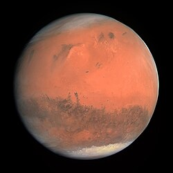

Observer Mars au télescope
Mars est la planète rouge, facilement visible à l'œil nu à certaines périodes. Voici comment l'observer de manière optimale :
- 1. Pourquoi Mars est une planète fascinante à observer
Mars est l’une des planètes les plus observées par les astronomes amateurs. Proche de la Terre lors de ses oppositions, elle révèle une surface riche en détails, des variations saisonnières marquées et une atmosphère dynamique. Contrairement aux géantes gazeuses, Mars est une planète tellurique : au télescope, on observe directement son sol, ses calottes polaires et parfois même des tempêtes de poussière planétaires.
- Matériel : petit télescope ou jumelles puissantes.
- 2. Quand observer Mars : opposition, distance et hauteur
L’observation de Mars est fortement dépendante de sa position orbitale.
a) L’opposition
Mars est la plus spectaculaire lors de son opposition, qui se produit environ tous les 26 mois. À ce moment-là :
Mars est au plus près de la Terre
Son diamètre apparent peut dépasser 22 secondes d’arc
Sa luminosité augmente considérablement
Elle est visible toute la nuit
En dehors des oppositions, Mars devient beaucoup plus petite (parfois moins de 5 secondes d’arc), ce qui limite fortement les détails observables.
b) Hauteur dans le ciel
Plus Mars est haute au-dessus de l’horizon, meilleure est la qualité de l’image :
Moins de turbulence atmosphérique
Moins de dispersion chromatique
Détails plus nets
Les oppositions dites périhéliques (lorsque Mars est proche du Soleil) sont les plus favorables, surtout pour l’hémisphère sud terrestre.
- 3. Quel télescope pour observer Mars ?
Mars peut être observée avec de nombreux instruments, mais les détails visibles dépendent du diamètre et de la qualité optique.
a) Petits instruments (70–90 mm)
Mars apparaît comme un petit disque orangé
Calotte polaire parfois visible
Peu ou pas de détails de surface
b) Télescopes moyens (130–200 mm)
Apparition de zones sombres (Syrtis Major, Mare Acidalium)
Calottes polaires bien visibles
Possibilité d’apercevoir des nuages blanchâtres
Début de perception des contrastes de surface
c) Grands télescopes (250 mm et +)
Détails fins de surface
Bordure irrégulière des calottes
Tempêtes de poussière visibles
Nuages orographiques au-dessus des volcans
- 4. Grossissement et conditions idéales
Mars supporte des grossissements élevés, mais uniquement si les conditions sont bonnes.
Grossissement typique : 150× à 300×
Par très bon seeing : jusqu’à 400×
Toujours privilégier la stabilité de l’image plutôt que la taille
Un ciel calme (bon seeing) est plus important qu’un ciel très noir.
- 5. Les détails observables sur Mars
a) Les calottes polaires
Visibles comme des taches blanches brillantes
Composées de glace d’eau et de CO₂
Leur taille varie selon la saison martienne
Parfois entourées d’une frange sombre (effet de contraste thermique)
b) Les régions sombres
Contrairement à une idée reçue, ce ne sont pas des mers, mais des zones où le sol est plus sombre :
Syrtis Major
Mare Cimmerium
Mare Sirenum
Sinus Sabaeus
Ces formations changent lentement d’aspect à cause des vents et de la poussière.
c) Les nuages et brumes
Nuages blancs ou bleutés visibles près du limbe
Nuages matinaux au-dessus des volcans (Olympus Mons, Tharsis)
Brumes polaires fréquentes
d) Les tempêtes de poussière
Peuvent être locales ou globales
Apparition de zones jaunâtres
Peuvent masquer toute la surface pendant plusieurs semaines
- 6. Utilisation des filtres
Les filtres améliorent fortement le contraste :
Filtre rouge/orange : accentue les détails de surface
Filtre bleu : met en évidence les nuages et brumes
Filtre vert : améliore le contraste entre régions claires et sombres
Filtre polarisant : parfois utile sur Mars très brillante
- 7. Méthode d’observation : patience et entraînement
Observer Mars demande du temps et de l’expérience :
Observer longtemps (au moins 30 à 60 minutes)
Attendre les instants de calme atmosphérique
Utiliser la vision décalée
Faire des croquis pour améliorer la perception des détails
Mars tourne sur elle-même en 24 h 37 min, ce qui permet d’observer différentes régions au fil des nuits.
- 8. Astrophotographie de Mars
Mars est idéale pour la photographie planétaire :
Caméras rapides (planétaire)
Vidéos de plusieurs milliers d’images
Empilement et traitement
Possibilité de révéler bien plus de détails qu’à l’oculaire
- 9. L’aspect émotionnel de l’observation
Observer Mars, c’est contempler une autre planète rocheuse, avec ses saisons, ses tempêtes et son histoire géologique. Savoir que ces détails visibles à l’oculaire correspondent à des lieux réels — volcans géants, canyons, déserts — donne une dimension presque intime à l’observation.

Mars une super planète du système solaire
Retour au blog